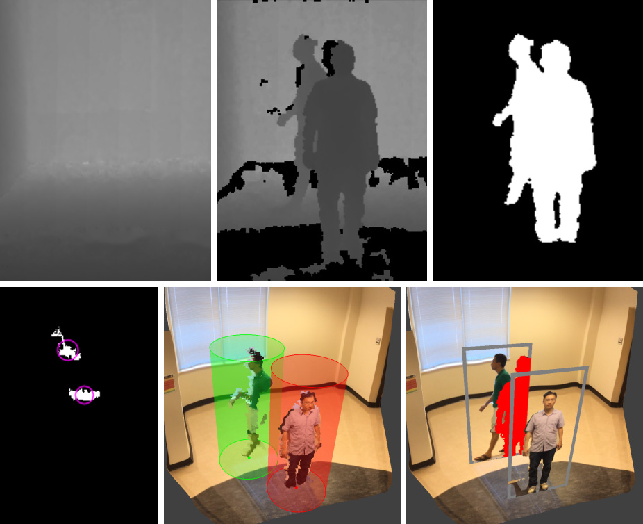

Pairs of frames that illustrate our occlusion removal method: the original frame is shown to the left, and the frame output by our method is shown to the right. Our method runs at an interactive frame rate of 30 frames per second.
Occlusions disrupt the visualization of an object of interest, or target, in a real world scene. Video inpainting removes occlusions from a video stream by cutting out occluders and filling in with a plausible visualization of the object, but the approach is too slow for real-time performance.
In this paper, we present a method for real-time occlusion removal in the visualization of a real world scene that is captured with an RGBD stream. Our pipeline segments the current RGBD frame to find the target and the occluders, searches for the best matching disoccluded view of the target in an earlier frame, computes a mapping between the target in the current frame and the target in the best matching frame, inpaints the missing pixels of the target in the current frame by resampling from the earlier frame, and visualizes the disoccluded target in the current frame. We demonstrate our method in the case of a walking human occluded by stationary or walking humans. Our method does not rely on a known 2D or 3D model of the target or of the occluders, and therefore it generalizes to other shapes. Our method runs at an interactive frame rate of 30fps.
Top: depth channel of reference frame (left) and of current frame (middle), and output of 2D segmentation (right). Bottom: top view image of foreground objects used for 3D segmentation (left), and visualization from a translated viewpoint of bounding cylinders (middle) and of billboards (right).
Meng-Lin Wu and Voicu Popescu. 2019. RGBD temporal resampling for real-time occlusion removal. In Proceedings of the ACM SIGGRAPH Symposium on Interactive 3D Graphics and Games (I3D '19), Stephen N. Spencer (Ed.). ACM, New York, NY, USA, Article 7, 9 pages. DOI: https://doi.org/10.1145/3306131.3317025